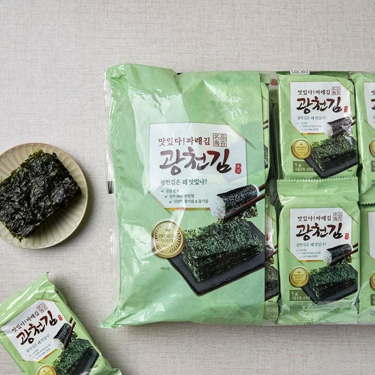

광천김
충남 광천 특산 김 — 조미김·돌김 선물 세트.
광천김은 충남 홍성 광천 일대에서 나는 김으로, 마트·전통시장·공항에서 한국 음식으로 많이 사 가는 기념품입니다. 조미김은 밥반찬·간식으로 바로 먹을 수 있습니다.
습기와 눌림에 약하니 지퍼백에 넣고 캐리어 중앙에 두세요. 기름·소금이 있는 조미김은 개봉 후 빨리 먹는 편이 좋습니다.
광천김은 충남 홍성 광천 일대에서 나는 김으로, 마트·전통시장·공항에서 한국 음식으로 많이 사 가는 기념품입니다. 조미김은 밥반찬·간식으로 바로 먹을 수 있습니다.
습기와 눌림에 약하니 지퍼백에 넣고 캐리어 중앙에 두세요. 기름·소금이 있는 조미김은 개봉 후 빨리 먹는 편이 좋습니다.
사는 팁
구매 팁 대형마트 묶음이 관광지보다 저렴한 경우가 많고, 선물용은 개별 포장 세트를 고르세요.